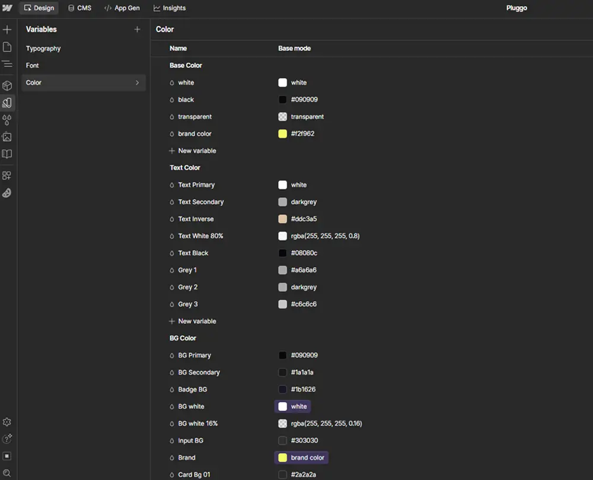
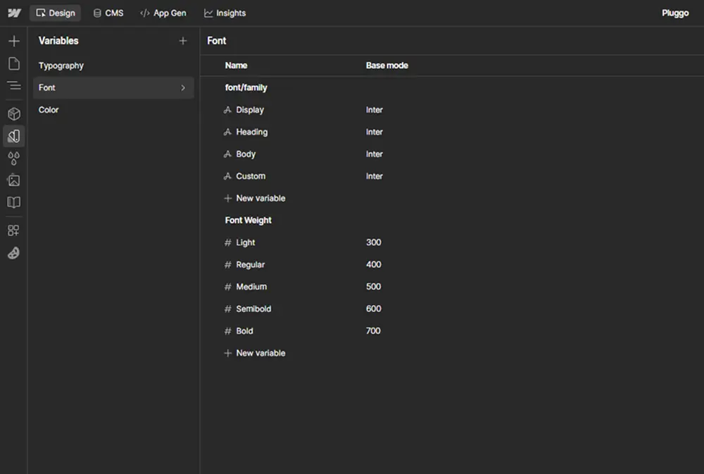
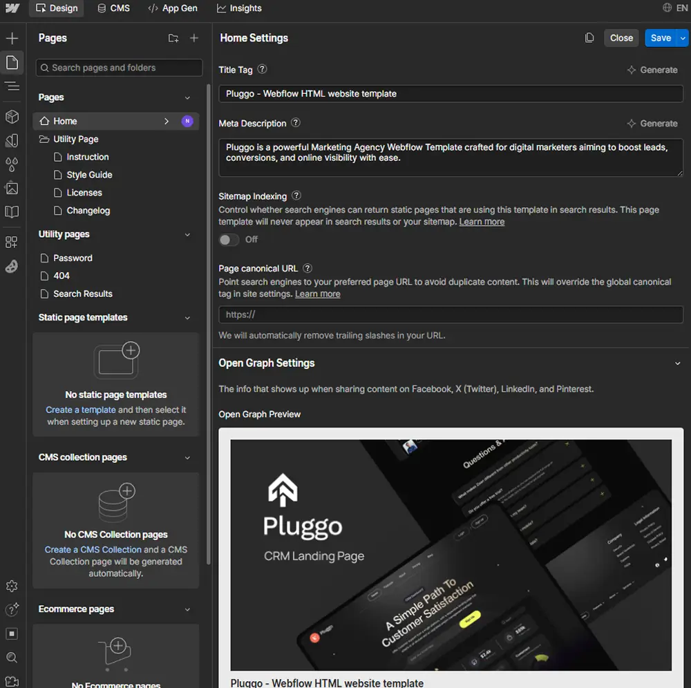

Instruction
If you just purchased Pluggo - A Scalable CRM Webflow Template and are looking for the basics on how to get started and editing this thing? Let's started.
Getting Started
Thank you for purchasing the Pluggo template! This Instruction will help you get started with editing key elements like colors, fonts, and CMS content.
If you’re new in Webflow, we recommend taking the Webflow 101 Crash Course at Webflow University. It covers essential basics to help you familiarize yourself with the platform and start customizing your website efficiently.
Styling with Webflow Variables
Let's begin customizing your template.
Colors
Pluggo template leverages Global Color Variables, allowing for seamless, site-wide color customization with just a few clicks.
If you want to make changes, simply navigate variables panel in the left sidebar, scroll down to the Colors section, and double-click any swatch you'd like to modify. Once updated, your new color choices will instantly reflect across every element.

Fonts
Pluggo template uses one single font side-wide, and it's set up as variable, so this means you can easily update the font on all in a single click.
In order to do this, you just need to go to the Variables tab in the left sidebar, then select the Main Font variable, and change the font to any font for your business brand.

If you're looking to use a unique or premium font that isn't available in Webflow, Go to Site Settings > Fonts. Here, you can easily upload your custom fonts or integrate your Adobe Fonts account, giving you access to a wide range of fonts from Adobe's extensive library. This allows for greater design flexibility and ensures your website stands out with custom typography.

Graphics & Icons
Some icons or graphics in the template are normal images/graphics, so you will notice that when updating all colors, these will still have the template color.
This happens because the graphics you're working with are in image formats (PNG, JPG, SVG, etc.), which means that modifying the Webflow CSS (styling) won’t impact their appearance. If you'd like to repurpose these graphics, feel free to download them and customize them using any design software of your choice (e.g., Photoshop, Illustrator, Sketch, Figma, etc.), or simply upload your own images/graphics that align with your brand’s aesthetic.
Editing Pages
The Pluggo template offers easy page editing, whether it’s static or dynamic content. You can access any page through Webflow's Designer to update text, images, and layout components directly.
Static Pages
Static Content is all the content that is not CMS-based, which means that it is not dynamic (like a Blog Post, for example).

You can easily identify all this content because it's shown as grey in the left sidebar Navigator, and it shows a blue border when you click or hover over it.
If you want to edit this type of content, you can just double click it, and you will be able to directly type right there.
Useful Notes
In addition to the basic explanations provided above, here are a few helpful tips and how-to guides based on the some of the most common query that we receive. These practical insights will help you get the most out of your template and address frequent inquiries.
Interactions
If you would like to edit any template Interaction (i.e. removing a appear effect), you can easily identify elements that have interactions as these have a small Interactions icon (a small thunder) in the left sidebar Navigator.
If you click this little Interactions icon, you will open the right sidebar Interactions tab for this element, where you can edit the interaction.

Mobile or Tablet View
Every time you make a change (for example, you create a new section design), it's a good practice to go to your Viewport top navigation and see how it looks on Tablet and Mobile

If you're only updating content, such as replacing text or swapping out images, within a template section and leaving the original classes intact, you likely won’t need to adjust much. However, when you start making deeper customizations like modifying class structures or building new layouts, it’s essential to regularly check and fine-tune the mobile and tablet breakpoints to maintain a polished and responsive design
Editing Meta Title, Description, and Featured Image
If you would like to customize the Title, Description and Image that is shown when you share your website on any place (i.e. Facebook, Twitter, etc), you can easily go to the Pages section in the left Sidebar, click the little Settings icon of the page you would like to customize, and all these settings will appear.

Please note it's important to change this on page basis.
Backups
If something goes wrong, for example, if you are not liking where the website is going to, if you deleted some critical classes that were required to make the Template look nice, or you simply want to review an earlier version, you can always rely on the Backups feature to restore a previous state with just a few clicks.

You can find it in the Settings section in the left Sidebar, and then you can just see all the automatic or manual backups. Restoring to the old backup is just a click away.
Our Webflow Template Support
Although Pluggo was designed to be easy to customize, if you run into any issues or have any questions, our dedicated support team is here to help. You can contact us anytime at hi.nexila@gmail.com, and we’ll be happy to assist you.
Custom Design & Development
If you're looking for a unique, tailored version of Pluggo or a completely custom-built Webflow site, our experienced design and development team is here to assist. Get in touch with us for personalized solutions designed to meet your specific needs.